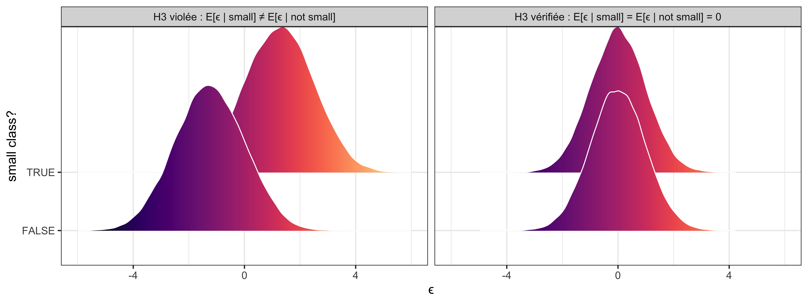
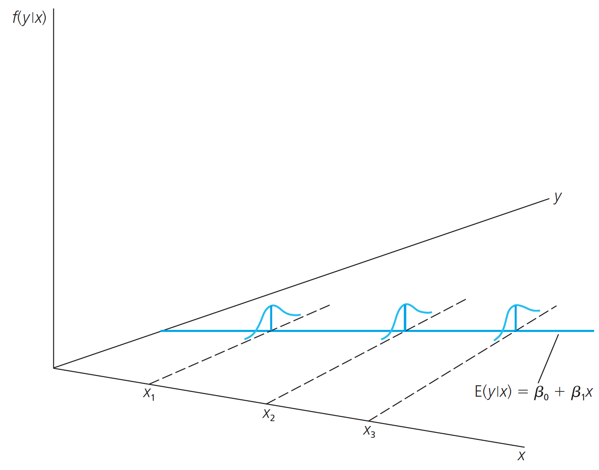
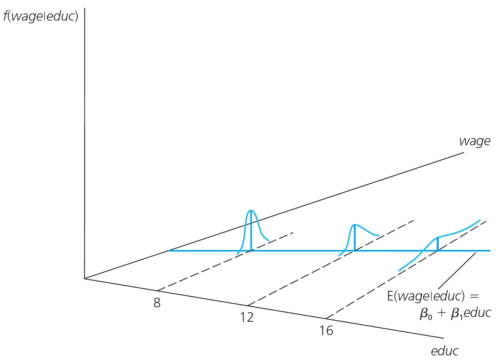
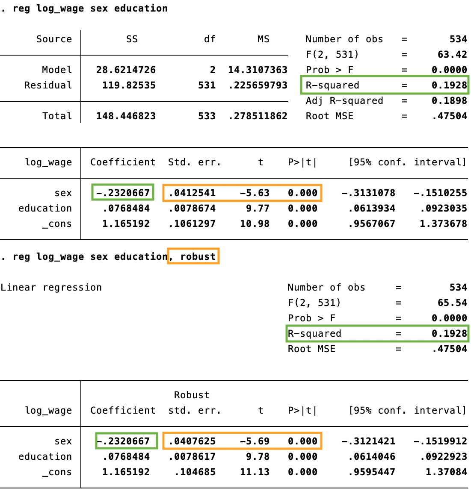

Économétrie (ECON0212)
HEC Liège
November 2026
Objectif : étudier la relation entre y (dependent) et un ensemble de variables x_1, x_2, \dots, x_k (indépendantes).
Le MRC suppose que, dans la population :
y = \beta_0 + \beta_1 x_1 + \beta_2 x_2 + \cdots + \beta_k x_k + \varepsilon
[H1] Dans la population, y s’écrit comme une combinaison linéaire des paramètres \beta_0, \dots, \beta_k, plus une erreur : y = \beta_0 + \beta_1 x_1 + \beta_2 x_2 + \cdots + \beta_k x_k + \varepsilon
La linéarité porte sur les paramètres, pas sur les variables.
En RLM, les x_j peuvent être des transformations d’autres variables :
\Rightarrow Un même modèle « linéaire » peut décrire des relations non linéaires entre y et les variables.
⚠️ Mais alors l’effet d’une variable ne se lit plus sur un seul \beta_j (ex. effet marginal de l’expérience = \beta_1 + 2\beta_2\,\text{exper}).
[H2] On dispose d’un échantillon aléatoire de taille n : \{(x_{1,i}, x_{2,i}, \dots, x_{k,i}, y_i) : i = 1, \dots, n\}
Chaque observation est le vecteur complet (x_{1,i}, \dots, x_{k,i}, y_i) : il provient de la même distribution que, et est indépendant de, (x_{1,j}, \dots, x_{k,j}, y_j), \forall i \neq j.
On peut donc écrire le modèle pour chaque observation : y_i = \beta_0 + \beta_1 x_{1,i} + \cdots + \beta_k x_{k,i} + \varepsilon_i
Violation (ex. sélection de l’échantillon, non-réponse liée à y) : l’échantillon n’est plus représentatif de la population \rightarrow estimations biaisées des \beta_j.
[H3] Dans la population, l’erreur a une espérance nulle, quelles que soient les valeurs de toutes les variables explicatives : E[\varepsilon \mid x_1, x_2, \dots, x_k] = 0
[H3] Dans la population, l’erreur a une espérance nulle, quelles que soient les valeurs de toutes les variables explicatives : E[\varepsilon \mid x_1, x_2, \dots, x_k] = 0

| Erreur \varepsilon_i | Résidu \hat e_i | |
|---|---|---|
| Définition | y_i - \beta_0 - \sum_j \beta_j x_{j,i} | y_i - \hat y_i = y_i - \hat\beta_0 - \sum_j \hat\beta_j x_{j,i} |
| Dépend de | vrais paramètres \beta_j (population) | estimations \hat\beta_j (échantillon) |
| Observable ? | Non | Oui, après l’estimation |
Par construction des MCO (PROPRIÉTÉS), les résidus vérifient toujours, pour chacun des k régresseurs :
\sum_{i=1}^n \hat e_i = 0 \qquad \text{et} \qquad \sum_{i=1}^n x_{j,i}\, \hat e_i = 0 \quad \forall j = 1, \dots, k
\rightarrow que H3 soit vraie ou non.
H3 ne se vérifie pas avec les résidus : elle se justifie par le raisonnement économique (ou par le design, ch. 3).
[H4] Dans l’échantillon (et donc dans la population) :
En régression simple, H4 se réduisait à « x varie ». En RLM, c’est plus exigeant : aucun x_j ne peut être une combinaison linéaire exacte des autres.
Exemples de violation :
H4 autorise des variables corrélées, même fortement : l’estimation reste possible (mais moins précise).
[H5] La variance de l’erreur est la même pour toutes les combinaisons de valeurs des x : Var(\varepsilon \mid x_1, \dots, x_k) = \sigma^2 \quad \Rightarrow \quad Var(y \mid x_1, \dots, x_k) = \sigma^2

Var(\varepsilon_i \mid x_i) = \sigma^2
La même pour tout i.

Quand H5 n’est-elle pas plausible ?
Conséquences pour les MCO
✅ Pas de biais (H1–H4 suffisent)
🟰 Interprétation du R^2 inchangé
❌ Erreurs standards usuelles fausses \Rightarrow t-stat, IC et p-values invalides ; MCO plus les plus efficaces
Solution : erreurs standards robustes. En Stata : reg y x1 x2, robust

[H6] Erreurs normales, indépendantes des x : \varepsilon \mid x_1, \dots, x_k \sim \mathcal{N}(0, \sigma^2)
| Hypothèses | Ce qu’elles garantissent |
|---|---|
| H1–H4 | \hat\beta sans biais |
| H1–H5 | \hat\beta efficace (BLUE) et erreurs standards usuelles valides |
| H1–H6 | distribution exacte de \hat\beta \Rightarrow tests et IC exacts |
👉 Takeaway : si les hypothèses ne sont pas respectées, l’inférence n’est pas valide !
✅ Comment gérer les données ? Lisez-les, ordonnez-les, visualisez-les…
✅ Comment résumer une relation entre plusieurs variables ? Régression linéaire univariée et multiple…
✅ Qu’est-ce que la causalité ?
✅ Comment faire si nous n’observons qu’une partie de la population ? Échantillonnage !
❌ Nos résultats sont-ils uniquement dus au hasard ? Intervalle de confiance, test d’hypothèse et inférence
❌ Comment trouver de l’exogénéité en pratique ?
Contact
Un grand merci à Malka Guillot pour avoir partagé les supports de ce cours, ainsi qu’à Florian Oswald et à toute l’équipe de ScPoEconometrics pour leur livre et leurs ressources.